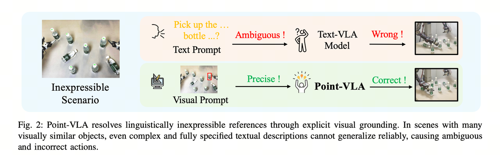
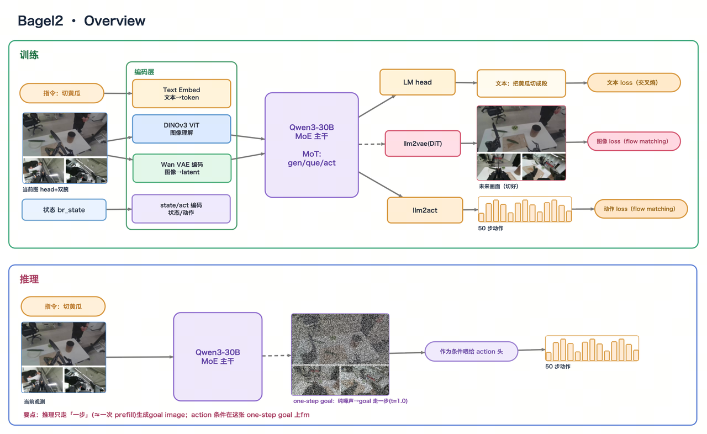
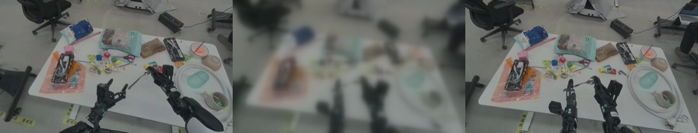

汇聚 · 当前在 Seed 主攻
X2Action AnyContext → Action
让机器人的动作，能够 condition 在任意模态、任意长度、任意来源的上下文上。
核心判断：智能的上限，取决于模型能吸收多少上下文。
语言侧——从短 prompt 走向长上下文 + In-Context Learning，LLM 的能力随上下文丰富度不断涌现；
视频生成侧——标注越详细，可控生成越贴意图；
而机器人 VLA 还停在"一句短指令 → 动作"，意图带宽被压进十几个字，这正是具身智能的瓶颈。
X2Action 就是把机器人接入同一条铁律：一端对齐 LLM 的长上下文 / ICL（把上下文 X 喂进来），一端对齐可控视频生成（让模型自己生成 X）。
40.9%
起点问题：只给一句短指令"把倒下的调料瓶扶正"（约 15 字），成功率只有 40.9%。
抓哪里、朝哪个方向转、抓多深、放到哪——这些"怎么做"的信息全被语言压没了。补上这段信息，就是补上一段上下文 X。
Part ① · X 输入：外力在动作前"喂"上下文对齐 LLM 长上下文 / ICL
1.1
文字 X · Long Instruction
同一个 baseline，只换指令——先验证"补上下文"这条路走不走得通。
| 指令类型 | 平均字数 | ID 成功率 | 说明 |
|---|
| 短指令 | ~15 | 40.9% | 起点，信息被压缩殆尽 |
| 长指令（全量环境 + 步骤） | ~1539 | 54.5% | 把场景与操作步骤全部写清 |
| 定语扩写（只说清物体） | ~78 | 54.5% | 仅 78 字即达到超长文效果 |
| checklist（子步骤 + 思考） | ~522 | 51.5% | 结构化子任务与进度 |
| + VQA 联合训练 | — | 最高 59% | 叠加理解类数据进一步涨点 |
涨点靠"消歧"不靠"长度"
78 字 ≈ 1539 字，关键是把"指哪个物体、怎么操作"说到无歧义。
人写 > 机写
机器标注的幻觉会抵消掉信息量带来的收益。
有效维度
左右臂分工 + 有序子步骤 + 空间/抓取/朝向等"怎么做"细节。
文字路线的硬伤：约 78 字即饱和；且推理时长指令难以现取（现场用大模型生成会带来幻觉与延迟）。→ 于是转向非文字的上下文。
1.2
视频 X · VideoICL
当前主攻
方向、顺序、抓取部位、目标物这些"怎么做"，视频天然就编码好了。
问题
语言表达不了的空间与操作细节（指哪个、从哪抓、朝哪转、先做哪个），在视觉参考里是天然存在的。
做法
把一段参考演示视频作为上下文喂给模型，让它照着做。训练范式采用交错 episode——同一任务的不同 episode 互为演示，避免模型用"自己的未来帧"作弊导致过拟合。
亮点
四类训练中完全未见的迁移能力被激发；对照实验证明模型是真在看视频，而非碰巧。

为什么需要视觉上下文：场景里有大量相似物体时，再详尽的文字描述也会有歧义；视觉提示则能精确指认。
| 零样本迁移维度 | 纯语言 | 给视频上下文 |
|---|
| 方向（向下拉文具袋） | 方向错 | ✓ 正确 |
| 顺序（梨 → 菠萝 → 苹果 入篮） | 顺序错 | ✓ 正确 |
| affordance（抓杯子把手） | 抓杯身 | ✓ 抓把手 |
| 目标物（擦指定图形） | 擦错 | ✓ 擦对 |
上下文输入 & 迁移效果
上下文长什么样：第三人称演示 + 机器人自身观测
方向迁移：演示 / 看视频→成功 / 纯语言→失败
顺序迁移：人类演示 / 机器人模仿出同样的顺序
控制变量：给视频→动作有意义；不给→乱动
最大的坑 = 训推不一致（掉点主因）。
①帧数与间隔：训练固定 4–9 帧，推理时序列更长、间隔更大；
②物料与环境：训练用 oracle 演示，推理现场条件不同；
③视角对齐：做 crop 对齐时，头部相机位移过大导致手臂直接从画面中消失，直接掉 7 个点。
这条是我目前主攻的工程重点。
反例：视角裁切导致手臂消失
提测（杯子放杯垫）：成功 / 失败对照
最新进展：高质量 ICL benchmark 采集完成（白背景 + 屏风标准化），两个本体各 2200 条，新链路自测正常。
标准化采集案例：物块右移 / 空中画圆 / 两木块推中间
1.3
空间 X · Grounding-CoT
规划中
让模型先输出 mask / affordance / bbox 作为空间上下文，再据此动作——通用抓放的下一级阶梯。
Part ② · X 输出：模型自己"想象"出上下文对齐可控视频生成 · 天然训推一致
不依赖外部演示：模型先想象一张"目标该长什么样"的图（这就是 X），再据此动作。内生、天然训推一致，且直接对齐可控视频生成这条成熟范式。
2.1
Bagel2-VLA · 一步生成"模糊目标图"
已打通
问题
外部演示不总是有；而且"给什么上下文"依赖人工准备，训练与推理容易不一致。
做法
走 world model 路线：在当前观测上一步预测出一张（模糊的）未来目标图，再把它回喂给动作头当作上下文条件。推理时只走"一步"生成 goal image，动作即条件在这张图上。
亮点
仅一步去噪出的模糊目标图就已经足够当上下文，效果比生成高清图好一倍多，in-domain 抓取明显变强。

训练与推理链路：训练端同时学文本 / 图像 / 动作；推理端一步生成 goal image 作为动作条件。

左：当前帧 · 中：模型一步生成的模糊目标图 · 右：真实未来帧。模糊的目标已经足够指导动作。
| 预测目标 | 成功率 | 说明 |
|---|
| pure_noise（预测 delta 图，一步去噪直接 cache） | 27% | ✓ 最好，in-domain 抓取明显变强 |
| VLA baseline | 22% | 对照组 |
| dfeat（预测未来 feature） | 22% | 无明显收益 |
当前主要挑战 = 过拟合（小样本训完后原始基座的通用能力会退化），这是下一步要攻的点。
源第一人称视频：双手传递勺子
2.2
未来帧 / IDM · World Model
规划中
预测未来帧序列，或从视频反推动作（IDM）——"模型自产上下文"的自然延伸。
零样本具身视频生成 · 案例一
零样本具身视频生成 · 案例二
共同底座 & 一张表看全局
统一动作表示
37 维 chunk（双臂 eef + 夹爪 + 关节 + 胸 + 底盘），TCP 系，兼容多种本体。
统一数据链路
统一打包 → 全量 shuffle → 统一模板 → 统一部署，shuffle 一项即带来明显收益。
统一评测
统一任务集 + AA-test，保证不同路线的结果可横向比较。
| 上下文从哪来 | 形态 | 工作 | 关键证据 | 状态 |
|---|
| （起点） | 短语言 | baseline | 成功率 40.9%——天花板 | 起点 |
| ① 输入 | 文字 | Long Instruction | 40.9% → 54.5%；定语扩写 ≈ 超长文；人写 > 机写 | 做扎实中 |
| ① 输入 | 视频 | VideoICL | 四类零样本迁移，联合训练激发；两本体各 2200 条基准 | 主攻 |
| ① 输入 | 空间 | Grounding-CoT | 先出 mask / affordance / bbox 再动作 | 规划中 |
| ② 输出 | 目标图 | Bagel2-VLA | pure_noise 27% > baseline 22%；全链路打通 | 已打通 |
| ② 输出 | 未来帧 / 动作 | World Model / IDM | 预测未来帧序列、从视频反推动作 | 规划中 |